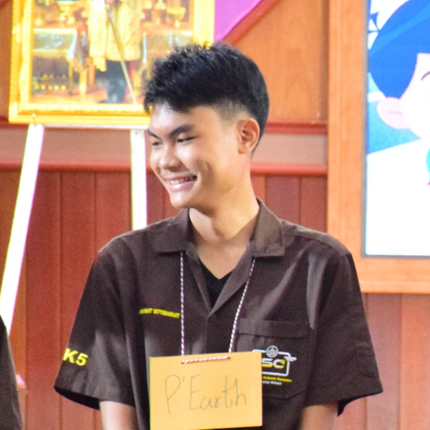

Narongrit Sittisuonjit
ISC Intensive Science Computer
สวัสดีครับ ผมชื่อเอิร์ธ ณรงค์ฤทธิ์ สิทธิสวนจิตร
ขณะนี้ผมกำลังศึกษาอยู่ในระดับชั้นมัธยมศึกษาปีที่ 6/12
แผนการเรียนวิทยาศาสตร์คอมพิวเตอร์ (ISC)
ที่โรงเรียนบ้านไผ่ จังหวัดขอนแก่น ครับ
ผมมีความสนใจที่อยากจะสร้างเว็บไซต์เพื่อแนะนำแผนการเรียนของเรา
ให้กับนักเรียนและผู้ปกครองที่สนใจได้รู้จักมากขึ้น
จึงได้พัฒนาเว็บไซต์นี้ขึ้นมาเพื่อเป็นช่องทางในการสื่อสาร
และนำเสนอข้อมูลต่างๆ ของแผนการเรียน
ISC Intensive Science Computer
ให้ทุกคนได้รับทราบอย่างครบถ้วนและเข้าใจง่ายครับ
ตัวผมมีความสนใจที่จะเข้าศึกษาต่อ ณ โรงเรียนจ่าอากาศ และมีความฝันที่จะเข้ารับการศึกษาต่อ ณ โรงเรียนเตรียมทหาร สถาบันวิชาการป้องกันประเทศ
ผมหวังว่าทุกท่านจะได้รับข้อมูลที่เป็นประโยชน์จากเว็บไซต์นี้ และหากมีข้อสงสัยหรือต้องการติดต่อสอบถามเพิ่มเติม สามารถติดต่อผมได้ผ่านทางช่องทางต่างๆ ที่มีอยู่ในเว็บไซต์นี้ครับ
รายละเอียดการพัฒนา
Frontend Website
พัฒนาโครงสร้างหน้าเว็บด้วย HTML, CSS และ JavaScript พร้อมออกแบบให้รองรับการใช้งานบนหลายขนาดหน้าจอ
UI Design
ออกแบบภาพรวมเว็บไซต์ให้เข้ากับสายการเรียนคอมพิวเตอร์ มีความทันสมัย อ่านง่าย และใช้งานสะดวก
Content Structure
จัดหมวดหมู่ข้อมูลหลักสูตร คณะครู กิจกรรม และข้อมูลติดต่อให้นำเสนออย่างเป็นระบบ